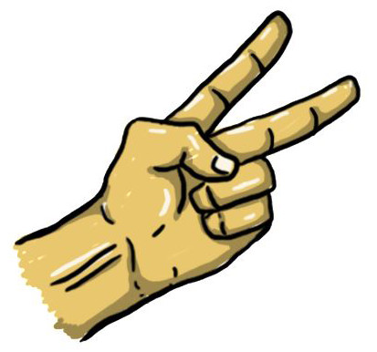

|
 |
 |
Rock |
Paper |
Scissors |
Introducing "Rock", the unstoppable force in the classic game of rock, paper, scissors. "Rock" may not be flashy or versatile, but what it lacks in style, it makes up for in raw power and unbreakable strength. |
Say hello to "Paper", the smooth operator of the rock, paper, scissors game. Don't be fooled by its soft exterior, this versatile wonder has a trick up its sleeve. It's the ultimate shape-shifter, adapting to any situation and coming out on top. |
Meet "Scissors", the underdog of the rock, paper, scissors game. Often overlooked and underestimated, "Scissors" has always played second fiddle to its flashier counterparts. But don't let its small size fool you, "Scissors" has a big heart and a determination to win. |